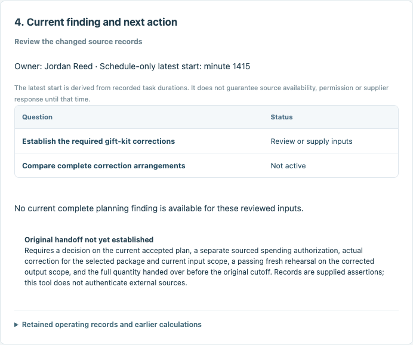
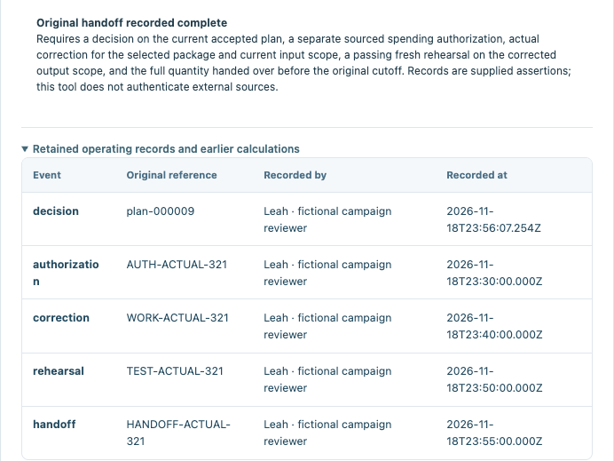
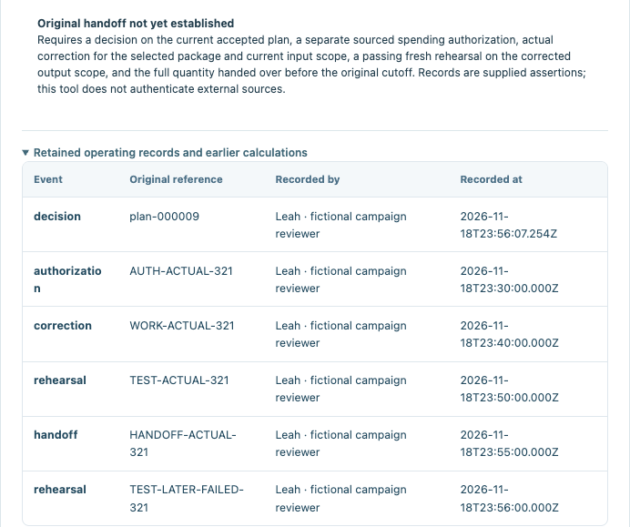
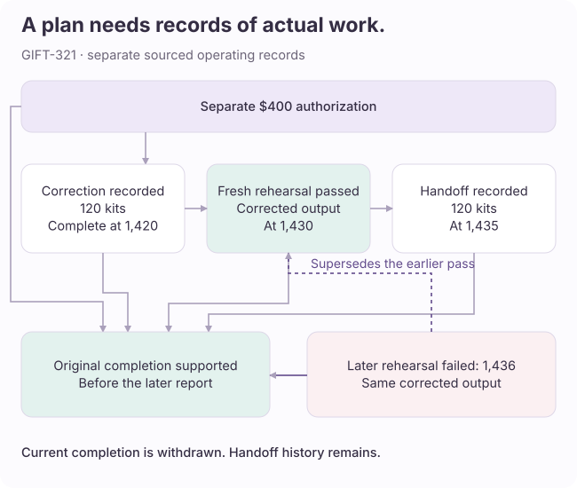

Leah has promised 120 usable gift kits by the end of a one-day preparation window. Marketing expects the recipient journey to work, finance caps correction spending at $600, and production needs a response it can actually carry out. A calculated package helps, but Leah still has to connect that proposal to reviewed records, a decision and the work that follows.
The CLI intervention queue has flagged Jordan Reed's GIFT-321. Its review clock is at minute 1,410 of 1,440: thirty minutes remain in this particular case. The $300 in-house package takes forty minutes. A confirmed $400 external package can finish in twenty-five. Paying the premium makes sense only if the complete response meets the requirements and the team can support the original handoff.
The developer needs a custom desk where Leah can continue that review, inspect the evidence, choose work and retain what actually happened. Should the team build a second decision-and-review implementation, or reuse the published workflow through the SDK?
The same urgent campaign. Two defensible next actions.
Shared basis. The same GIFT-321 case: 120 kits by minute 1,440, review at 1,410, a $600 limit, the same faults, quotes, starts, resources, permissions and v3 cost-first app. External complete correction costs $400 and would finish at 1,435.
What changes. Exactly one input field: the insert revision stated by the external booking is insert-4 in one calculation and insert-3 in the other. The campaign itself still uses insert-4.
Booking covers the current insert
$400 external correction is supported.
- Campaign insert
- insert-4
- Booking names
- insert-4
- Calculated handoff
- Minute 1,435, five minutes before cutoff

Leah can propose external work on this recorded basis, then obtain authorization and coordinate execution. The quote and correctly scoped booking support different parts of that proposal.
Booking covers the previous insert
No supplied complete correction passes.
- Campaign insert
- insert-4
- Booking names
- insert-3
- Remaining alternative
- In-house work finishes at 1,450: too late

Leah needs a genuine booking for the current configuration or an escalation. Rewriting the old confirmation to match the new insert would manufacture support.
What this means for the decision. The price and promised speed are unchanged. A source record that covers the actual work determines whether that response is available; a meaningful result can be “obtain support or escalate.”
These two calculations use the same GIFT-321 case and pinned app. Only the insert revision stated in its booking differs. Leah can propose the $400 package when the source covers the current insert; with an old-scope booking, she needs a genuine replacement confirmation or an escalation. The desk must make that difference visible without hiding it in application code.
What may the next step rely on? This is the practical question behind computational hermeneutics. A confirmation can support this planning step only within its recorded scope and conditions. Reviewing a confirmation for an old insert does not extend its scope to the current one. Accepting a current planning finding records that review; choosing work, authorizing expense and establishing actual completion remain separate.
The continuation below follows the current-booking scenario. The old-insert view is a separate comparison; obtaining a replacement source record would be a real next action, rather than editing an old assertion until it passes.
The developer’s task is to build this company-specific interaction while keeping the domain requirements, calculated findings and review history together. The SDK supplies those native operations; React supplies the forms and presentation.
What would the developer otherwise build?
Several approaches can support the business decision. The useful comparison is the infrastructure each team chooses to maintain.
| Approach | Where it can fit | Responsibility in this case |
|---|---|---|
| Handwritten checks | A small, stable requirement set. | Maintain complete-package logic, evidence interpretation, ranking, review states and the relationship between revisions and actual records. |
| Workbook or shared custom module | Team-owned formulas or code reused across clients. | A shared module can also keep logic consistent. The team defines its case, coverage, report and continuing-review contracts. |
| General-purpose solver | A problem needing a new model or different search behavior. | Encode the domain and supply admission, release binding, review history and operating-record integration. |
| Decision Lab SDK and this authored workflow | Embedding the existing gift-kit review in a custom client. | Supply the team's forms, source mapping and system integration while reusing native workflow state, published assessments and shared report views. |
The developer chooses the SDK because the CLI already uses this authored workflow and app release. The desk can continue the native review without rebuilding its reasoning or translating it into a second rule system.
Hermod's shared structure is concrete here: the workflow implements the corrective commitment decision pattern, while its evidence and planning apps answer supporting questions. The SDK lets the developer reuse that authored implementation inside a team-specific interface. The authored configuration supplies these business requirements and handoffs; the integration supplies company records and the interaction Leah needs.
Continue the CLI review inside a custom application.
The Gift-kit Handoff Desk creates the SDK with its browser executor:
const executor = createBrowserExecutor(), lab = createDecisionLab({ executor });createDecisionLab is from @decision-lab/sdk; createBrowserExecutor is from @decision-lab/sdk/browser. The worker performs assessment and complete report preparation. React supplies the example's interface, forms and lifecycle.
Leah opens the native continuing-review file from the CLI queue. Public lab.workflows.openRun opens the artifact. The sample's openReviewJourney helper additionally checks the expected authored definition and app release, consistent campaign identity and retained original case. A compatible file format alone would not establish those business identities.


The import preserves the exact content hash, sources, pending answers and zero workflow evaluations. It does not accept the inputs or reuse the conservative screen as an accepted finding.
This continuation uses the cost-first v3 policy: meet all requirements, then lower expense, then earlier handoff. It preserves a ten-minute planned rehearsal under the app's five-minute minimum. The earlier ten-minute-minimum adaptation is a separate authored release.
Keep changed inputs, calculated evidence and reviewed findings separate.
When Leah changes a source field or timing premise, this client's shared integration module writes that change through the SDK as an answer awaiting review. That is the retained reviewed-mode policy, rather than a requirement for current calculation workflows:
if (!equal(next.answers[questionId].value, value)) next = lab.workflows.answer({ run: next, questionId,
value, status: WORKFLOW_ANSWER_STATUS.AWAITING_REVIEW, at: atTime(at) });WORKFLOW_ANSWER_STATUS is a public SDK vocabulary. The native workflow makes dependent findings stale. The screen withdraws the current proposal and retains the earlier calculation as history; exporting or saving flushes edited fields into that pending native revision.
Leah names the reviewer and selects Review current inputs. Only that explicit action records input acceptance. She then selects Calculate evidence. The shared helper prepares and evaluates the requested native question:
const state = lab.workflows.prepare({ run: current, stepId: id });
// Reopening or pressing Review twice does not abandon an unchanged booking.
// A changed premise becomes stale through the native workflow before this gate.
if ([WORKFLOW_STEP_STATUS.ACCEPTED, WORKFLOW_STEP_STATUS.AWAITING_REVIEW].includes(state.status)) return current;
return lab.workflows.evaluate({ run: current, stepId: id,
...(execution ? { execution } : {}), createdAt: atTime(at) });The authored evidence step interprets the actual reports against the published possible fault combinations. It infers no probabilities. In this case, reviewed observations retain one combination requiring a complete correction; they do not support an insert-only shortcut.
Calculation and review remain separate. After Leah inspects the evidence finding, Accept evidence finding records a native review of that current evaluation:
const state = lab.workflows.prepare({ run: current, stepId: stepId ?? settings(current).planningStepId });
requireValue(state.status === WORKFLOW_STEP_STATUS.AWAITING_REVIEW,
'Review a current completed finding; stale or unavailable results cannot be accepted.');
return lab.workflows.review({ run: current, evaluationId: state.evaluationId, status: WORKFLOW_REVIEW_STATUS.ACCEPTED,
actor, role: state.role, at: atTime(at) });WORKFLOW_STEP_STATUS and WORKFLOW_REVIEW_STATUS are public SDK constants. A stale or unavailable result cannot pass this acceptance gate. The accepted evidence becomes the premise for the next question, Calculate planning.
The functions updateReviewInputs, evaluateReviewJourney and acceptReviewFinding are sample integration helpers around those public APIs. The domain-authoring artifact supplies the evidence-to-planning mapping and business requirements. React hooks coordinate edits, cancellation and file controls.
A focused answer, with the supporting detail still available.
At minute 1,410, the planning finding prefers external replacement and repair: $400, finishing at minute 1,435. The in-house complete response would finish at 1,450 and miss the original cutoff. An earlier finish alone does not earn a premium: in the ample GIFT-320 case, the same cost-first release prefers $300 in-house work at minute 40.
The paired planning views above render that current result and its unsupported-booking counterpart using the same component.
The application renders the retained planning report using the shared DecisionView from @decision-lab/react-views:
{report ? <DecisionView report={report} profile={desk.config.decisionPresentation} /> : <p>No current complete planning finding is available for these reviewed inputs.</p>}The presentation profile supplies business labels and USD formatting. The current shared view leads with the answer, then a compact comparison of complete alternatives, costs and blocking conditions. Expand Selected option details for the inspected package’s requirements and schedule; open Technical inspection for its complete report. These presentation settings do not calculate a second feasibility or ranking result.
Inspecting another row changes only what Leah is reading. The authored workflow keeps input and finding reviews, the operating choice and sourced authorization separate. The current-interface verification confirms that inspecting an alternative leaves the exact native review hash unchanged.
The client still checks completed execution, report-completeness metadata, pinned identity, retained timing, complete assessment coverage and finite business values. inspectReportCompleteness checks metadata; it does not establish identity, a complete schema, currentness, preference or human acceptance. Native commitment helpers distinguish a complete assessment, a feasible witness and an established preference; valid preferred ties remain ties. A limited search can have a witness without a complete assessment or established preference.
The sample's local REVIEW_OUTCOME, REVIEW_STATE and booking-status labels describe its business screen. They are separate from public execution and workflow vocabularies. A complete blocked review is meaningful; an incomplete or unknown calculation remains unavailable.
Turn a reviewed proposal into a separate operating choice.
Leah selects Accept planning finding, then separately selects Choose External replacement and repair. Accepting a calculation does not choose work or authorize the expense.
The sample's choice helper resolves the native assessment and requires a complete review with a feasible witness:
const assessment = commitment.resolveCommitmentAssessment(view.currentRun.assessment, view.currentRun.report);
requireValue(commitment.isAssessmentComplete(assessment) && commitment.hasFeasibleWitness(assessment),
'No complete feasible response is available. Record escalation or revise the commitment.');It then resolves exactly one complete feasible plan, including its start time, and retains that plan's choices and evaluation hash. It does not choose an arbitrary member of an ambiguous result. The selected arrangement is a whole supported combination of correction, rehearsal and handoff under this case's records and rules.
Separate external records follow. Each names its source and reference, event time, recorded time and applicable scope. The worked GIFT-321 sequence supplies:
- Spending authorization: a sourced $400 authorization for the original campaign and selected response.
- Actual correction: 120 kits corrected from minute 1,410 to 1,420, linked to the original input scope. The output now uses insert-5, destination-3 and checkout-2.
- Actual rehearsal: a passed ten-minute rehearsal completing at 1,430 on that corrected output, linked to the correction record.
- Actual handoff: all 120 kits handed over at 1,435, linked to that passed rehearsal and corrected scope.
A planned duration is not a passed test. Original input scope and corrected output scope are distinct. The authored gate checks the selected basis, source scope, quantities, results, chronology and original 1,440-minute cutoff.


Only now does the gate support Original handoff recorded complete. The actual-event clock is separate from the retained decision clock. Recording a source assertion does not authenticate it, grant authority, purchase services, perform correction or physically hand over kits.
Let later evidence reopen an earlier conclusion.
A later rehearsal report arrives at minute 1,436 and records a failure on the same corrected output. Leah records that original source reference. The latest complete rehearsal record supersedes the earlier positive one, so the gate withdraws original completion.




This is a feedback loop: an actual observation returns to the review and changes what the team can claim, while the original handoff promise stays fixed. Planning ten minutes for rehearsal never established a passed test. The sourced operating records supported the earlier completion finding; the later failed result gives the team a current reason to investigate again.
The workflow does not search backward for a favorable assertion. A new correction would need its own fresh rehearsal and linked handoff; changing the cutoff or campaign identity cannot rewrite the original promise.
This closure rule belongs to the domain-authored workflow. The shared integration module records the external assertions with their selected-plan basis; its generic helper is not an SDK business rule, authenticated event service or booking system.
Retain pending work, and respect the storage boundary.
Leah may need to stop before reviewing another changed premise. Download continuing review serializes the native workflow, including pending answers, sources, evaluations and operating history:
const text = labRef.current.sources.renderJSON(current, { maxBytes: 50000000 });The capture changes the review time to minute 1,411 and exports that pending revision. Its obsolete finding and choice stay stale. A small fresh draft also passes local save and reopen. The full operating history, however, exceeds browser localStorage quota: the current sample reports an error instead of saving it. A production integration needs storage sized for retained native histories and a verified reopening path.
saveReviewJourney is a small sample storage adapter with an expected-hash conflict guard, not an SDK database. The company owns production storage, authentication and system integration. Public lab.reports.compareFindings can compare compatible retained calculations; the interface preserves unavailable comparisons and ties.
The Gift-kit Handoff Desk repository contains the complete implementation. The selected excerpts here link to exact public source lines, with identities in the source manifest.
A justified premium, with an honest account of what happened.
Leah can explain why this urgent campaign supports a $400 package with a current booking, while an old-scope booking calls for intervention. Ample-window work can use $300. Jordan can point to the exact reviewed plan and the separate authorization, correction, rehearsal and handoff records. When the later failed test arrives, they can see why the original completion is no longer established and which evidence needs attention.
The sample renders its pinned gifting report through DecisionView. Its reviewed-mode workflow and custom desk have not been migrated to the Marketplace calculation interface. The SDK’s full output and the saved native review remain available alongside the focused screen, preserving evidence, evaluations and operating history.
The developer has built a team-specific working interface around the same native review used by the CLI. The SDK retains the state and assessments; the authored workflow supplies the domain requirements; shared views present the reports. The company still owns trustworthy sources, operating judgment and the work itself.